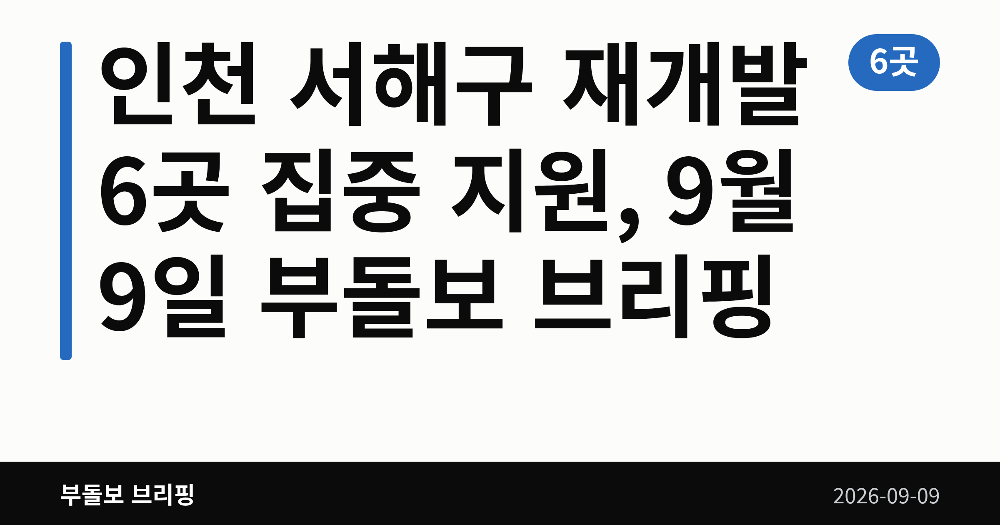
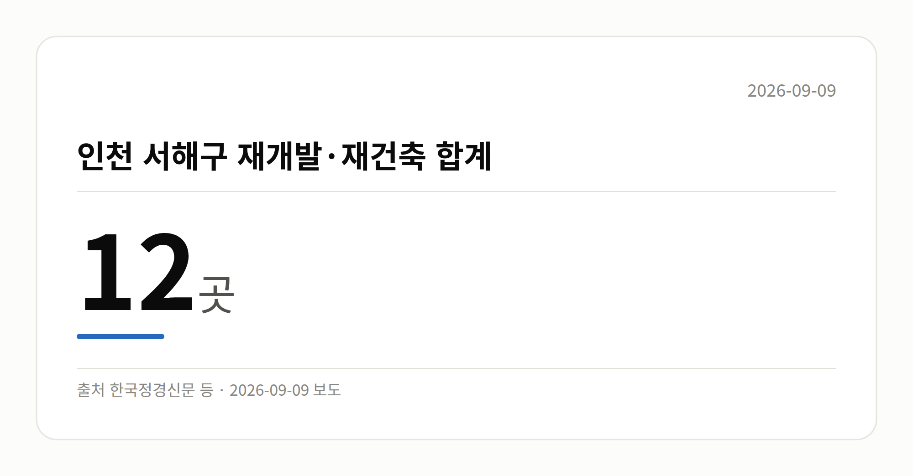

📷 대표 이미지 — 검색 목록에 이 그림이 썸네일로 뜹니다
→ 파일 img-0-cover.png 을 글 맨 위에 올리고 상자는 지웁니다

이 글은 2026년 9월 9일 기준으로 정리한 내용입니다.
3줄 요약- 인천 서해구가 원도심 정비사업 집중 지원을 발표했습니다
- 재개발 6곳·재건축 6곳, 모두 12곳이 대상입니다
- 재개발 6곳의 연내 정비구역 지정 여부를 보면 됩니다
인천 서해구 재개발 6곳을 포함해 정비사업 12곳이 집중 지원 대상에 올랐습니다. 같은 날 부동산원과 국토교통부도 잇따라 정비사업 현장 점검에 나섰습니다.
오늘은 가격 지표보다 정책 행보가 두드러진 하루였습니다.
📷 이미지 — 노후 주택이 빼곡히 들어선 원도심 골목 풍경
인천 서해구 재개발, 오늘 발표된 내용
인천 서해구는 원도심 재개발 6곳, 재건축 6곳 등 총 12곳의 정비사업(낡은 주택가를 헐고 새로 정비하는 사업)을 집중 지원하겠다고 밝혔습니다.
이 가운데 재개발 6곳은 연내 정비구역 지정(정비사업을 할 수 있는 구역으로 지자체가 공식 지정하는 절차)을 목표로 추진 중이라고 합니다.
여기에 재개발·재건축 원스톱 행정 지원 체계를 가동하고, 도시재생사업과 주차 등 생활환경 개선사업도 함께 본격화한다고 덧붙였습니다.
숫자로 본 인천 서해구 재개발·재건축
| 구분 |
곳 수 |
비고 |
| 재개발 |
6곳 |
연내 정비구역 지정 목표 |
| 재건축 |
6곳 |
- |
| 합계 |
12곳 |
- |
출처: 쓰담미디어, 위키트리, 한국정경신문 등
📷 이미지 — 재개발 6곳과 재건축 6곳, 합계 12곳을 보여주는 막대그래프
→ 파일 img-2-stat-card.png 을 이 자리에 올리고 상자는 지웁니다

인천 서해구 재개발, 지금 어디까지 왔나
앞서 본 12곳 가운데 재개발은 아직 정비구역 지정을 목표로 하는 초기 단계입니다. 착공이나 입주까지는 상당한 시간이 걸릴 것으로 보입니다.
개별 사업장 이름과 세부 진행 단계는 공개되지 않았습니다. 또 '서해구'는 자료 원문 표기를 그대로 옮긴 것이라 실제 행정구역명은 한 번 확인해 보시는 편이 좋겠습니다.
노후주택에 살고 계신다면, 내 집이 이 대상에 포함되는지와 현재 단계가 어디인지를 구청 고시로 확인하는 것이 순서입니다.
그 밖의 오늘 소식
- 이헌욱 부동산원장, 점검회의 열고 정비사업 병목 해소 강조
- 김이탁 국토차관, 서울 거여새마을 공공재개발 현장 방문
- 국토차관, 조기 착공 적극 지원과 속도 제고 언급
- 오늘은 시장 온도를 볼 가격·거래 수치가 확인되지 않았습니다
📷 이미지 — 정부 관계자들이 재개발 현장을 둘러보는 모습
오늘의 체크포인트
- 인천 서해구 재개발 6곳의 연내 정비구역 지정 여부
- 서울 거여새마을 등 공공재개발의 조기 착공 진행 상황
- 발언과 현장 방문 단계인 만큼, 구체적 실행계획 공개 여부
그래서 나는?- 원도심 노후주택 거주자라면, 내 집이 12곳에 드는지 확인해 보세요
- 정비사업 조합원이라면, 지금 단계가 어디인지부터 점검할 때입니다
- 실수요자라면, 착공까지 시간이 걸린다는 점을 감안하셔야 합니다
여러분이 사시는 동네도 이번 정비사업 지원 대상에 들어 있는지 확인해 보셨나요?
댓글로 알려 주시면 다음 글에 반영하겠습니다.
#부동산 #아파트 #인천 #서울 #인천서해구 #인천재개발 #서해구재개발 #원도심재개발 #재개발 #재건축 #정비사업 #정비구역지정 #공공재개발 #거여새마을 #국토교통부 #한국부동산원 #도시재생 #노후주택 #주거환경개선 #주택공급 #부동산정책 #부동산뉴스 #내집마련 #실수요자 #조합원 #원스톱행정지원 #생활환경개선 #부동산브리핑 #부돌보브리핑 #오늘의부동산